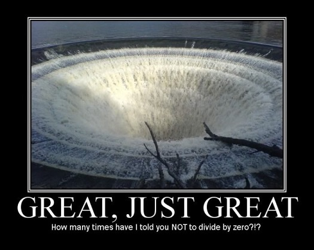
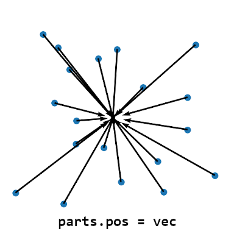
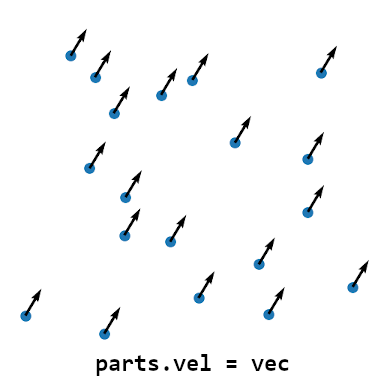

The particle system operates with two distinct, albeit interconnected scripting interfaces. These interfaces are:
level scripts – for level builders (the end users of effects)
module scripts – for module developers (the creators of effects)
Below we discuss the relevance and role of both script interfaces in the plugin and explain how the module should be structured to allow its use in a level script.
Level scripts are Lua script files placed in the data subfolder and are named accordingly with the TR4 level files they are paired to, only with the extension .lua instead of .tr4. For example, if our level is called tut1.tr4, the level script file must be called tut1.lua. Another example, if we have the level coastal.tr4, the corresponding script file should be named coastal.lua.
To be recognized and loaded by the plugin, this script file must be placed in the data subfolder (together with all the level files). If the plugin doesn’t find a match between the current level and a script file, no script file will be loaded for the level. This does not interrupt the game flow (the level will still be loaded correctly and the game continues as normal), but it means that the level cannot use any scripted effects.
The TR4 level files and level script files will also be mismatched in case of misspellings, e.g. tuts.lua instead of tut1.lua. Level scripts are not mandatory, i.e. lack of a level script file does not interrupt game flow (i.e. levels will still be loaded as normal). However, to use effects a level, there must be an equivalent level script file in the data subfolder.
Level scripts, though they are Lua files, are not for scripting new effects. They mainly serve level builders to import existing effects and modify selected features. Instead, plugin is equipped with a powerful and convenient module system for writing custom effects. Modules are isolated, independent Lua scripts that define a self-contained particle effect (or a grouping of related effects). This means that if some users prefer not to write much code, these level builders won’t need to make effect scripts by themselves, but may use effects distributed as modules from developers or other users.
If you are a developer, although you must be familiar with both interfaces, you will be using the module interface much more extensively in your developer role. Developers write module scripts for level builders to use (you might be both a developer and a builder, in which case as a level builder, you will use your own modules).
Module scripts are Lua script files located in the modulescripts subfolder (which does not exist, it must be newly added to the root directory of the TRLE project). Module scripts can be named freely, with any suitable file name accepted by the Windows file system.
If you intend to make your custom particle effects, you should be writing them in the form of modules. There are obvious reasons why this approach is preferrable.
The first is that the module system provides the benefit of scripting an effect once, but being able to reuse it several times. This way, you don’t have to resort to copy-pasting the same code into multiple level scripts. The second is if you intend to kindly share your very special effect with the rest of the TRLE builder community, module scripts are the most convenient way of doing so. As a developer, you can further add all kinds of parameters for end users to customize the effect.
To begin a module script, it is customary to call a special, built-in function in the plugin’s API, createModule(). This is not mandatory, Lua scripts can still work as modules without calling createModule().
Parameter tables – the developer perspective
A parameter table is a lua table that host various parameters of the module script. These parameters can be of any data type used by the particle plugin. This includes all of Lua’s native types (numbers, booleans, strings, functions and so on) as well as plugin data types like Vectors or Colors. These parameters can be then accessed by the builders who import the module into their level scripts.
The parameter table should be written near the beginning of the script file, either above or below the local group variable declaration. If the parameters will be referred to in init or update functions, the parameter table should certainly appear in the module script prior to that.
You must also remember that the parameter table should be returned at the end of the module script. The return instruction allows to assign the parameter table to a variable in a level script. Omitting this return will effectively drop the parameter table from the module, as if the module had no customizable parameters to begin with, require() returning nil.
mygroup = createGroup(initFunc, updateFunc) -- group creation and assignment
-- if the module has a parameter table, it must be returned at the end of the script
return parameters
The parameter table takes the form of a record table, with key-value pairings:
local parameters = {red = 245, green = 150, blue = 10, damage = 20, setsOnFire = true}
You have full freedom as to what parameters you place in the table, but you have one opportunity to do so – in the definition of the parameter table. You are not permitted to add new fields to the table later on. This is a consequence of the error prevention system devised for parameter tables.
By default, Lua allows to add new records to a table by indexing the table with a new key and assigning a value to it:
parameters.Red = 200
parameters.blu = 100
Above, we can see that, according to the default rules, two new fields are added to the parameters table, parameters.Red and parameters.blu. Neither of these fields existed in the original table (remember, case-sensitivity). Was the intention to access parameters.red and parameters.blue instead? To prevent such ambiguity and room for errors, the table cannot be extended with new fields after its initial definition in the module script. Lua will signal this with an appropriate error message.
This hopefully will avoid the headaches of a builder (or even a developer) from accidentally adding a new field to a table (when the aim was to access an existing field) and then wondering why the script does not seem to work, as such a bug might be difficult to catch. Therefore, the very easy to follow rule is: put every parameter in the table in advance. You can always extend the table definition if you need more parameters.
Apart from the above rules, there are no restrictions about how you should use parameters internally in the module. You can use them for anything you wish, in any assignment operation, any calculation, any function call, any comparison. They are not limited to just numbers, they can be of any type. To the builder, it should only be clear what the exposed parameter is responsible for, whereas you handle the logic tied to that parameter yourself.
Of course, you may choose to make a module without any parameters. In such case you can either leave the parameter table empty: {} or, better yet, opt out of defining and returning a table in the module altogether. In the latter case, the module code will be reduced to:
local mygroup -- group variable declaration
-- init and update functions, if applicable
mygroup = createGroup(initFunc, updateFunc) -- group creation and assignment
Such a module will return nil from require() in the level script. This is the preferred method making a module without parameters, only make a parameter table if the module will indeed have them.
Hosting a particle group in the parameter table
The parameter table is mainly supposed to host parameters to be used inside the init and update functions. The default values set in the table are evaluated only once, during module import.
You may be interested in giving builders the ability to change some settings of the particle group for the effect. Changes made to group settings inside the module are evaluated during module import as well, and never again. This is why code like below may not give you the results you might be expecting:
-- effect.lua
local mygroup
local params = {draw = DRAW_SQUARE}
-- init and update functions, if applicable
mygroup = createGroup(initFunc, updateFunc)
-- this will be done only on module import and not after
mygroup.drawMode = params.draw
return params
If you import this module, you may expect to be able to change the value of the draw parameter in the level script and it will reflect in changing the drawMode field for the group in the module.
local effect = require("effect")
effect.draw = DRAW_LINE -- this does not change mygroup.drawMode
Unfortunately, this will not work. As was outlined above, the assignment mygroup.drawMode = params.draw was made in the module code already, which is performed once, during import, when params.draw had the original value set in the table and not the value we modified in the level script.
However, there is a workaround that allows to access the group in the level script. It’s a bit strange, but instead of creating a local variable for holding the particle group, you create a parameter for it in the parameter table. We can sensibly name this parameter group:
-- effect.lua
local params = {group = nil} -- we create a field with a dummy value like nil
Notice that we have set group to be nil. It is not important what value it is, it can even be some number. We only need this value so group becomes a valid, existing field in the parameter table. Notice we couldn’t just write group and assign no value, otherwise Lua wouldn’t know what group means in such case. As effect developers we know that when we call createGroup() and assign the return result to a local group variable, the variable stores the particle group afterwards. However, we are not using a local group variable, but a parameter in a table. We can again set the value of the group parameter after calling createGroup(). This will store the group inside the parameter table! Here is the code that demonstrates this:
-- effect.lua
local params = {group = nil} -- we create a field with a dummy value like nil
-- init and update functions, if applicable
-- the resulting particle group gets assigned to the param table field
params.group = createGroup(initFunc, updateFunc)
params.group.drawMode = DRAW_SQUARE
return params -- params now host the group as a parameter
As a result of this, in the level script we will now be able to do the following:
local effect = require("effect")
effect.group.drawMode = DRAW_LINE -- this indeed changes the particle group drawMode
As level builders, we can now change group settings in level scripts!
Keep in mind that with this method, the builder will have an unrestricted ability to change every setting of the group. There is no alternative to this, it would further complicate the module system with little benefit. If you need to expose the particle group settings for the module, this is the only way.
Modules with more than one effect
You are not limited to having a single particle group within a module. If your effect is a pairing of two or more different particle effects (like a projectile that leaves a trail), then naturally you will need to use several particle groups within the module to achieve this. This is not a problem to the import system, it will be able to import your grouping of effects without any issues. However, I would advise to really do this just for the effects that are dependent on each other, i.e. where one cannot work without the other.
If two effects are distinct enough that they can operate independently, then it makes more sense to turn them into independent module scripts. It costs nothing and makes everything easier. What if you later decide that you actually prefer to use only one of the effects for some level? Also, would you really enjoy dragging around a single, massive script file hosting hundreds of different, unrelated effects? Before the module system was put in place, this single, huge script file was precisely how it worked, and it was anything but convenient for the developer and the builder alike! Modules solve a lot of problems for both developers and builders.
Modules within other modules
You can also import module files in the context of another module file. In this case, you simply use the require() within the module, as you would use it in a level script.
This “feature” is more a side-effect of the module system rather than something intended by the plugin’s authors. Nonetheless, it’s a possibility.
We have not thought of many use cases for this nested module import. Maybe there can be a generally useful effect, which works as a dependency for other, more elaborate effects. You could then import the module with the generic effect into the secondary module which will use it.
Perhaps you can find some opportunities to use this feature and let us know. :)
As was already hinted in the introduction to these tutorials, the plugin reads per-level lua script files. To be recognized and loaded by the plugin, the script file must be placed in the data subfolder (together with all the level files) and bear the same name as the TR4 level file it is paired with, just with the extension .lua instead of .tr4. For example, if our level is called tut1.tr4, the level script file must be called tut1.lua. Another example, if we have the level coastal.tr4, the corresponding script file should be named coastal.lua.
If the plugin doesn’t find a match between the current level and a script file, no script file will be loaded and the level will not use any effects. The level files and script files will also be mismatched in case of misspellings, e.g. tuts.lua instead of tut1.lua. Level scripts are not mandatory, i.e. lack of a level script file does not interrupt game flow (i.e. levels will still be loaded as normal).
It’s theoretically possible to write code for effects directly in level script files (for example, by copy pasting them into the script file). Nevertheless, this is not an optimal solution, as the plugin is equipped with a powerful and convenient module system. Modules are isolated, independent Lua scripts that define a self-contained particle effect (or a grouping of related effects). This means that if you are (only) a level builder and prefer not to write much code, you don’t need to make effect scripts yourself, but may use effects distributed as modules from developers or other users.
There is a substantially smaller subset of coding skills required when using modules made by others, but you still need to know some very general rules about Lua’s syntax. If you need a refresher, please re-read the section on variables and data types in Lua and (more optionally) on functions and tables.
So far, we have reminded ourselves that in this plugin, there are level scripts and modules that we can use in them. But how do we introduce the modules into our level scripts?
The foundation of the module import system is the require() function. It’s a built-in function in the plugin’s API.
The function takes one argument, which is the name of the module (as a string), but without any file extension. The plugin reads modules from the subfolder modulescripts (placed in the main game folder / Engine folder if using TombIDE). This modulescripts folder is where you must place all modules used for your TRLE project, otherwise the plugin won’t see them.
For the sake of example, say we have one module called ice.lua and another called fire.lua (both placed in the modulescripts folder). To import these modules into a level, in its associated level script (e.g. tut1.lua) we write:
require("ice") -- imports ice.lua from 'effects' subfolder
require('fire') -- imports fire.lua from 'effects' subfolder
Notice three aspects of the module import:
we are calling the require() built-in function. If the meaning of calling a function is not clear to you, please read up on calling functions with arguments.
we pass the name of the module as a string, but we are not specifying the .lua file extension after the name of the module (this is because modules can come in two forms, text files and precompiled binaries with .luac extension, more on those later)
the use of quotation marks "" or '' around the name of the module. This is because in Lua, strings need to be encased by single ('') or double("") quotes. Either form is fine, but you cannot mix single quotes with double quotes ("fire'). Also, be wary of putting any leading and trailing whitespace characters, such as in the string "ice ".
Assuming the module code has no errors, this should be sufficient to import the effect into the level in most cases. That’s not the full story behind require(), though. This function also returns the module’s parameter table, if the module has one.
Parameter tables – the level builder perspective
Modules can (optionally) have parameter tables. These parameter tables are created by the module’s developer and can take any form, depending on the developer’s intentions. The main usage for these parameter tables is to have various aspects of an effect easily customizable, without having to dig through the many lines code in the module. The developer, through exposing appropriate parameters in the table, can allow the user to decide on the effect’s color. Or its size. Or its duration. Or its sprite texture. Or whether the particles set Lara on fire. Anything, really.
To give this a TRNG analogy, you can think of them as a kind of Customize= or Parameter= command, but with Lua syntax.
Parameter tables are, in fact, lua tables. To remind you, tables have fields, which you access by using the dot operator.
How do you access the parameter table itself, after you import the module, though? Simple, it gets returned as the result of the require() function. You can assign this result to a local variable to have access to the parameters.
For the sake of example, we assume the developer of the module ice.lua exposed parameters to change the color and ID of the moveable spawning the ice particles. This can be a table such as:
{red, green, blue, emitterID}
This table of parameters will be returned from require('ice'). To not lose our access to these parameters, we must assign the result of calling this function to some local variable, like so:
-- this module has parameters, require returns a table
local ice = require("ice") -- we assign the table to local var ice
If the ice.lua module hosts a parameter table, it will be assigned to the local ice variable. Note that we are not forced to use the name ice, however I believe it is a good convention to name this variable identically (or similarly) to the module, to know which module’s parameters you are accessing / changing.
In our example, the developer exposed the parameters: red, green, blue, emitterID, the first three of which describe the color for the particle, and the last one is the NGLE script ID of the moveable which will be emitting the particles.
We can access these parameters through the assigned ice variable (holding the table returned by require()) and assign them our chosen values:
-- this module has parameters, require returns a table
local ice = require("ice") -- we assign the table to local var ice -- we can access each parameter individually
ice.red = 153 -- set red to 153
ice.green = 217 -- set green to 217
ice.blue = 234 -- set blue to 234
ice.emitterID = 10 -- set emitter ID to 10
As you see, we can customize the effect with relative ease, as long as the developer provided these parameters for us.
Parameter tables can take any form. Its entirely up to the developer what kind of parameters are exposed to the end user (i.e. the builder). They can include things like dimensions of the area of an effect, how frequently particles will spawn, the positions, velocities, etc.
As a level builder, you are only able to change the parameters exposed by the developer of a module. You cannot add your own parameters without changing the code of the module. Lua will signal an error if you try to add or access a parameter which is not present in the module. Remember also that Lua is case-sensitive, so ice.Red does not mean the same thing as ice.red. As a consequence of this, Lua will also give errors due to misspellings of parameter names.
It is possible for a module to have no associated parameters at all, in which case require() will return the special lua value nil instead of a table. In these cases, no parameters will be accessible after importing the module. A lack of a parameter table indicates that the developer did not intend any customizable parameters for the effect and you cannot change any aspect of the effect without changing the module code itself. When a module has no parameters, you can simply call require() without assigning the result to a variable, it is redundant when the module does not have parameters:
-- this module has parameters so require returns a table
local ice = require("ice") -- we assign the table to local var ice
-- this module has no parameters, require returns nil
require("fire") -- there is nothing to access so no variable necessary
Importing a module more than once
It’s possible to import the same module more than once within the same level script:
local ice1 = require("ice") -- first copy of the ice effect
local ice2 = require("ice") -- second copy of the ice effect
The above code will import the ice.lua module as separate copies, with their own parameter tables stored in ice1 and ice2. You can utilize this if you want to reuse the same effect more than once, but (assuming the effect has parameters), have a different variant of the effect, e.g. a different color:
With the above code, you will get two nearly identical versions of the effect, but each will have its own unique color values and be assigned to a different moveable emitter (5 for ice1 and 6 for ice2).
If you are just a builder and not interested in the developer aspects of writing modules, the relevant information for level builder’s purposes ends here.
If you want to use your modules exclusively by yourself, it does not matter how you choose to write them. As long as you understand what is going on in the module, it is your business.
Differently, if you would like to share your efforts with the community of builders, I would encourage to adhere to stricter guidelines for how a module should be written. Below are some of my ideas.
It goes without saying, but the module should be working, first of all. The code should not produce errors and should also not cause lags, FPS drops or crashes. Otherwise, chances are the module will not be held in high regards by other builders who will avoid your module.
When you add parameter tables to your effects, make sure that the purpose of each parameter is clear enough and the parameter indeed does what it is supposed to. Of course, names should be short, but at the same time remain descriptive. Does the parameter change the spawn rate of the particles? Then spawn_rate gives a better indication than something like sr.
Be mindful of what default values you set for the parameters. In the ideal scenario, the effect should be fully functional after importing, even if the builder does not change any of the default parameter settings. Of course, there are exceptions when this is not completely possible, for example if the effect requires a concrete NGLE index of a moveable and the default value may not be suitable, since it is highly variable what object (if any) has that specific index in a level. In such case, it should be communicated explicitly that the module has a mandatory parameter that needs to be changed by the builder in every circumstance.
Your module’s parameter table can host parameters of any data type supported by Lua (numbers, strings, functions, other tables, etc). However, casual builders with little knowledge about programming or Lua will be more likely to understand if a parameter is some number in the range 1 - 10 rather than if it’s a Lua function or some other complex data. This doesn’t imply you shouldn’t expose such parameters in the table! If you want to give users the option to change functions in the module, you can certainly do so. Just be sure to provide suitable default behavior in you module, in case the user does not know how to change the function.
Finally come the aspects of communicating the results accomplished by your module to other builders. What does it do? How can it be used? Can it be customized by parameters? What is the expected range of values for these parameters? Are there any bugs or aspects of the module that are ill-behaved? Be sure to give all such information to the potential users of the module so they know what to expect.
The module itself must be in text form, so the code can be examined directly. Modules in precompiled form should not be accepted due to safety concerns.
These are only some of my own personal thoughts about how module sharing between community members should look like. It would be wonderful to have a repository of module scripts created by members of the TRLE community, but some form of quality control would be necessary to make this feasable, hence I have given some of my own ideas on how to approach this matter.
So, you’re curious to know why in the last section, the formula for velocity needed cos() instead of sin() to achieve a curve like sin(x)?
To explain why this is, I must go on a tangent about the exact mathematical relation between velocity and position. I know, there is a lot of maths as of late, but I told you this section is optional, if maths is not your cup of tea.
To find a derivative…
When we think of velocity, what is the first thing that comes to mind? We can say it specifies the number of spatial units an object travels at an exact moment in time. Another way of phrasing this is by stating that velocity is the rate of change of position at a given point in time. It means that at that exact moment, the object travels this amount of spatial units (meters, kilometers, feet, miles) per unit of time (second, minute, hour) on the X, Y and Z axis.
Notice that the phrase: “rate of change at an exact point in time”, though intuitively makes sense to us, is a bit nonsensical, after giving it some thought. After all, to calculate a rate of change to position, we need to measure the position coordinates at two different points in time, then get the difference between these two positions (i.e. the change) and divide it by the difference in time between the measurements. If we narrow it down to a single spatial dimension, we can imagine the object traveling along the X axis. If we have a current measurment (xNow, timeNow) and a previous measurement (xPrev, timePrev), the formula to get the approximate velocity should look like this:
xVel = (xNow - xPrev) / (timeNow - timePrev)
If we are literal about the meaning of “an exact point in time”, this would imply that timePrev is the same as timeNow. Since (timeNow - timeNow) will always result in 0, we end up dividing the difference in position by zero!

So it seems like there is no way to make sense of a “rate of change at a given point in time”… or is there?
Mathematicians in the late 17th century (Newton and Leibniz) cleverly came up with something called calculus. It is a branch of mathematics dedicated to studying the rates of change (derivatives) and how numerous tiny changes add up to something (integrals). In calculus, to answer the above “paradox” of the immediate rate of change at an exact point in time, we don’t look at the rate when the time difference is exactly 0, but rather examine what the average given by the above formula tends to as the time difference gets closer and closer to 0. For example, a difference of 0.000001 seconds, rather than exactly 0 seconds. The smaller this difference is, the better approximation of the “rate of change at a given point in time” you end up with. However, even with this approach, it is ultimately just an approximation, thus we can’t obtain the precise value for a “difference” of 0… or can we?
Turns out, if the position is described as a function of time (function being used here in the mathematical sense) with a known mathematical formula behind it, you can almost certainly derive a correct formula for its exact rate of change at a given point in time. Notice the underlined derive word, because the process of finding this special function which gives the rate of change is called deriving the function, or alternatively, finding the function’s derivative. And it is this derivative that gives the formula for the exact rate of change (in our specific case, velocity). However, the process of deriving the function can get a bit tricky.
Say you have the following function f(t), which gives an output based on the input of time, t. The definition for f(t) can be something like:
f(t) = t³ + sin(t)
This function can describe the position on an axis (e.g. X) in regards to time t, so f(t) can be seen as x(t):
x(t) = t³ + sin(t)
The derivative function is the function denoted as x'(t) (notice the apostrophe, which is pronounced “prime”). This derivative function will give the “instantaneous” velocity based on t (as if we got it from a time difference of exactly 0). What would such a derivative function even look like? Once we work it out, we learn it will take the form of:
x'(t) = 3t² + cos(t)
Even at a quick glance, the are some slight similarities between x(t) and x'(t), right? In particular, the term sin(t) turned into cos(t), which is what we have seen happen in the case of our wave particles.
Trust me, I didn’t just pull this out of… thin air. I obtained the x'(t) formula by applying something known as differentiation rules (also called derivative rules) to the function x(t). Specifically, I applied the addition rule to the whole expression, the power rule to t³ and the trigonometric rule to sin(t).
I consider the topic of differentiation to be far outside the scope of a tutorial focused on particle scripting, so I will not venture into it. Nonetheless, I am signalling it for those readers who are inquisitive about this topic for further research. Online tools like WolframAlpha allow you to enter nearly any mathematical function, no matter how complex, and get its derivative function with respect to some variable, like x or t, with prompts of the form:
[function formula] derivative
[function formula] derivative with respect to [variable]
We live in the era of AI chatbot craze, so ChatGPT might be tempting to use for this purpose. I wouldn’t count on it giving correct solutions, though, as LLM (Large Language Model) chatbots like ChatGPT are infamous for answering mathematical queries blatantly wrong (they output text that is meant to “sound about right” to a human, but not necessarily make actual sense, factually or mathematically). WolframAlpha is more reliable, gives more accurate answers tailored specifically to mathematical prompts and predates LLM bots like ChatGPT, Gemini or Claude by well over a decade.
Math lesson over. Bring your homework assignments on Monday!
This very long tangent about calculus is over. I brought it up simply to point out that getting formula for velocity from a formula for position is not as straightforward as one would think. Unfortunately, when we want to formulate mathematically defined trails for particles by using velocity and not position, we must transform the formula for a curve with derivative functions.
This begs the question: with all this trouble, why even bother with changing the velocity, when we can change the position of the particle directly without getting involved with calculus in the first place?
Great question.
Well, you can directly set positions of particles in update, nothing is stopping you. But keep in mind that, unless particles are attached to moveable, particle positions are absolute. When you do something like this in update:
local t = getGameTick() * 0.1
part.pos.x = sin(t) * 100
What does part.pos.x become? Something in the range of [-100, 100], as sin(t) returns a value in the range [-1, 1] and we multiply it by 100. But X = -100 is outside of the editor’s map grid bounds and X = 100 just barely within them. We are placing our particles outside of the level map! We could find a value of X where we know it to be somewhere in our level map, but that be some weird number like 78321, hardly convenient and difficult to work with (remember getting the absolute position values for our dust effect? Eugh…)
Aha, but we have the emitterIndex which attaches particles to moveables, right? Sadly, I have not told you the full story of how emitterIndex really works. There is a feature in the plugin I have not touched on yet, called the Tethering System. I will explain it properly at some point, but suffice to say, it controls how particles can be attached to an object and how long they stay attached. When you use the emitterIndex, particles are indeed attached to the moveable, but by default, the moment the particles exit the init function, the relative coordinates get converted to absolute world coordinates and the particle loses its relation to the moveable. This behavior can be changed, of course, but that isn’t something I intended to cover yet, considering there will be a dedicated section to the Tethering System in a future chapter. For now, let’s assume this approach is a no-go.
Also, consider that you may have particles spawned in with slightly random offsets in the init function. If we overwrite the position directly in update, we lose information of what this random offset was. But velocity will preserve this offset, as it adds itself on top of what was already stored in the position vector. This is what makes setting velocity preferrable to setting position in the overwhelming majority of cases, as the original starting point of the particle remains untouched. Look at these diagrams to see the difference between setting position and setting velocity in update:
 
The arrows point to where the particles will end up in the next frame. You see that the offset is preserved in case of changing the velocity, but no longer the case if we overwrite the position.
So, what do we do if we want particles to travel along a helical path? In the previous mini-chapter we set up an “animated” helix of particles, but while the helix itself was animated, the particles were really only moving in a straight line. Now we want to flip it around, the helix will be static, but the particles themselves will travel along the helix. It’s also possible to do so, but in this case we need to calculate velocities for two axes, like X and Y.
If you followed through that section, you know that the parametric equations for a circle look like this:
x = cos(a) * r
y = sin(a) * r
These equations take a radius r and an angle a. As the values of the angle a sweep through the range 0 to 2 pi, the x and y coordinates will draw out a circle of the given radius r.
Since we want the circle to “sweep” over time, we swap out the variable a with time t:
x = cos(t) * r
y = sin(t) * r
Of course, t will most likely come from getGameTick(), but most likely, we will not use the raw value, but rather scale it by a constant scale factor
s:
x = cos(t*s) * r
y = sin(t*s) * r
These formulae will give us the position on the circle. To get the velocity formulae, we need to
If we leave this as is, we indeed obtain just a regular circle. But we are dealing with 3D space, not 2D space, our velocity also has Z-axis component. Right now we are not assigning anythin to it, so we have:
These formulae will give us the velocity components vx, vy for the X and Y axis, respectively. However, this is only true when we don’t change scale (through multiplication or division) of the angle a.
If any changes are made to the scale of a, it needs to be reflected by the formula for velocity. This is where the trickiness of obtaining correct formulas for velocity becomes apparant, as this is another one of the rules you must apply when working out a derivative function. We obtain the following:
vx = m * -sin(m * a) * r
vy = m * cos(m * a) * r
Where m represents some multiplication constant. Again, this only applies to the above specific case, the transformations between the normal position function and derivative function need to be worked out case-by-case.
The above covers virtually everything there is to know about the level scripts and module scripts as a developer. In the next chapter, we will be talking about mesh particles.